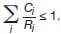
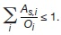
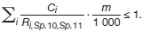
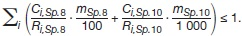
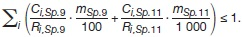

Anlage 8
(zu den §§ 35, 36, 37, 39 sowie Anlage 4)
Festlegungen zur Freigabe
Teil A: Allgemeines
- Sofern in den folgenden Teilen B bis G nichts anderes bestimmt ist, gilt Folgendes:
- Das Verfahren zum Nachweis der Einhaltung der Freigabewerte richtet sich nach der Art und Beschaffenheit
der Stoffe.
- Der Nachweis der Einhaltung der Freigabewerte ist anhand von Messungen zu erbringen. Zusätzlich ist die
Einhaltung der Oberflächenkontaminationswerte nachzuweisen, wenn eine feste Oberfläche vorhanden ist,
an der eine Kontaminationsmessung möglich ist; auch dieser Nachweis ist anhand von Messungen zu
erbringen. Im Einzelfall kann die zuständige Behörde auch andere Nachweisverfahren zulassen.
- Die zugrunde zu legende Mittelungsmasse für die Ermittlung der spezifischen Aktivität darf 300 kg nicht
wesentlich überschreiten.
- Die Mittelungsfläche für die Oberflächenkontamination darf bis zu 1 000 cm2 betragen.
- Bei mehreren Radionukliden ist die Summe der Verhältniszahlen Ci/Ri aus der freizugebenden spezifischen
Aktivität (Ci) und den jeweiligen Freigabewerten (Ri) der einzelnen Radionuklide gemäß Anlage 4 Tabelle 1
Spalte 3, 6 bis 11 und 14 zu berechnen (Summenformel), wobei i das jeweilige Radionuklid ist. Diese Summe
darf den Wert 1 nicht überschreiten:

Bei mehreren Radionukliden ist die Summe der Verhältniszahlen As,i/Oi aus der vorhandenen Aktivität je
Flächeneinheit (As,i) und den jeweiligen Werten der Oberflächenkontamination (Oi) der einzelnen Radionuklide
gemäß Anlage 4 Tabelle 1 Spalte 5, 12 und 13 zu berechnen (Summenformel):

Radionuklide brauchen bei der Summenbildung nicht berücksichtigt zu werden, wenn der Anteil der unberücksichtigten
Nuklide an der Summe aller Verhältniszahlen Ci/Ri oder As,i/Oi 10 Prozent nicht überschreitet.
- Wenn der Nachweis der Einhaltung des Dosiskriteriums der Freigabe nach § 31 Absatz 2 im Einzelfall geführt
wird, sind die Annahmen der Anlage 11 Teil B und C Nummer 1, insbesondere die Festlegungen der Anlage 11
Teil B Tabelle 1 Spalte 1 bis 7, zugrunde zu legen, soweit die Expositionspfade nach Anlage 11 Teil A für den
Einzelfall nach § 37 von Bedeutung sind. Der Freigabe flüssiger Stoffe im Einzelfall gemäß § 37 sind, soweit sie
abgeleitet werden könnten, höchstens die Werte der Anlage 11 Teil D Tabelle 6 Spalte 3 zugrunde zu legen. Bei
einer Freigabe von Bodenflächen dürfen nur solche Expositionspfade unberücksichtigt bleiben, die auf Grund
der vorhandenen Standorteigenschaften, insbesondere auf Grund der geografischen Lage und der geogenen
Verhältnisse, ausgeschlossen sind.
Teil B: Uneingeschränkte Freigabe von festen Stoffen, Ölen und ölhaltigen Flüssigkeiten, organischen
Lösungs- und Kühlmitteln
Die Werte der Anlage 4 Tabelle 1 Spalte 3 gelten für
- feste Stoffe,
- Bauschutt einschließlich anhaftenden Bodens, wenn die freizugebende Masse nicht mehr als 1 000 Megagramm im Kalenderjahr beträgt,
- Bodenaushub, der auf Grund seiner stofflichen Eigenschaften nicht als durchwurzelbare Bodenschicht im Sinne des § 2 Satz 1 Nummer 5 der Bundes-Bodenschutz- und Altlastenverordnung aufgebracht werden kann, wenn die freizugebende Masse nicht mehr als 37 500 Megagramm im Kalenderjahr beträgt, und
- Öle und ölhaltige Flüssigkeiten, organische Lösungs- und Kühlmittel.
Teil C: Spezifische Freigabe zur Beseitigung
- Eine spezifische Freigabe zur Beseitigung setzt voraus, dass die Stoffe, für die eine wirksame Feststellung nach
§ 42 Absatz 1 getroffen wurde, auf einer Deponie abgelagert oder in einer Verbrennungsanlage beseitigt
werden. Eine Verwertung oder Wiederverwendung außerhalb einer Deponie oder Verbrennungsanlage sowie
der Wiedereintritt der Stoffe in den Wirtschaftskreislauf muss ausgeschlossen sein.
- Die Werte der Anlage 4 Tabelle 1 Spalte 8 bis 11 gelten nicht für Bauschutt und Bauschutt einschließlich
anhaftenden Bodens, wenn die freizugebende Masse mehr als 1 000 Megagramm im Kalenderjahr betragen
kann.
- Als Deponien für die Beseitigung freigegebener Stoffe sind nur solche Entsorgungsanlagen geeignet, die
- mindestens den Anforderungen der Deponieklassen nach § 2 Nummer 7 bis 10 der Deponieverordnung vom
27. April 2009 (BGBl. I S. 900), die zuletzt durch Artikel 2 der Verordnung vom 27. September 2017 (BGBl. I
S. 3465) geändert worden ist, entsprechen und
- eine Jahreskapazität von mindestens 10 000 Megagramm im Kalenderjahr (Mg/a) oder 7 600 Kubikmeter im
Kalenderjahr (m3/a) für die eingelagerte Menge von Abfällen, gemittelt über die letzten drei Jahre, aufweisen.
Sollen in einem Kalenderjahr mehr als 1 000 Megagramm freigegeben und über eine Entsorgungsanlage beseitigt
werden, so ist abweichend von Nummer 2 und Teil A Nummer 1 Buchstabe e Satz 1 bei mehreren
Radionukliden die Summe der Verhältniszahlen Ci/Ri aus der freizugebenden spezifischen Aktivität (Ci) und
den jeweiligen Freigabewerten (Ri) der einzelnen Radionuklide i gemäß Anlage 4 Tabelle 1 Spalte 10 oder 11,
multipliziert mit einem Tausendstel der freizugebenden Masse, zu berechnen. Diese Summe darf den Wert 1
nicht überschreiten:

Sollen in einem Kalenderjahr sowohl Massen mit Radionukliden unter der Maßgabe der Anlage 4 Tabelle 1
Spalte 8 als auch der Anlage 4 Tabelle 1 Spalte 10 zur Beseitigung auf einer Deponie freigegeben werden, so
ist abweichend von Teil A Nummer 1 Buchstabe e Satz 1 bei mehreren Radionukliden die Summe der Produkte
der Verhältniszahlen Ci/Ri aus der freizugebenden spezifischen Aktivität (Ci) und den jeweiligen Freigabewerten
(Ri) der einzelnen Radionuklide i nach Anlage 4 Tabelle 1 Spalte 8, multipliziert mit einem Hundertstel der
freizugebenden Masse und dem Produkt der Verhältniszahlen Ci/Ri aus der freizugebenden spezifischen Aktivität
(Ci) und den jeweiligen Freigabewerten (Ri) der einzelnen Radionuklide nach Anlage 4 Tabelle 1 Spalte 10,
multipliziert mit einem Tausendstel der freizugebenden Masse, zu berechnen. Diese Summe darf den Wert 1
nicht überschreiten:

Für eine Freigabe zur Beseitigung in einer Verbrennungsanlage nach der Maßgabe der Anlage 4 Tabelle 1
Spalte 9 oder Spalte 11 gelten die Sätze 3 und 4 entsprechend, d. h. für die Summe gilt:

Dabei ist
| Ci
| die mittlere spezifische Aktivität des im laufenden Kalenderjahr freigegebenen und freizugebenden Radionuklids i in Bq/g und Ci < Ri
|
| m
| die Masse der im laufenden Kalenderjahr freigegebenen und freizugebenden Stoffe in Megagramm
|
| Ri
| der Freigabewert nach Anlage 4 Tabelle 1 Spalte 8, 9, 10 oder 11 für das jeweilige Radionuklid i in Bq/g.
|
Teil D: Spezifische Freigabe von Gebäuden, Räumen, Raumteilen und Bauteilen
- Die Freimessung eines Gebäudes, eines Raumes, von Raumteilen oder von Bauteilen soll grundsätzlich an der
stehenden Struktur erfolgen. Die Messungen können anhand eines geeigneten Stichprobenverfahrens durchgeführt
werden.
- Die zugrunde zu legende Mittelungsfläche darf bis zu 1 m2 betragen.
- Ist eine spätere Wieder- oder Weiterverwendung des Gebäudes oder Raumes nicht auszuschließen, so dürfen
die Oberflächenkontaminationswerte die Werte der Anlage 4 Tabelle 1 Spalte 12 nicht überschreiten.
- Soll das Gebäude oder sollen Teile hiervon nach der Freimessung abgerissen werden, so dürfen die Oberflächenkontaminationswerte
die Werte der Anlage 4 Tabelle 1 Spalte 13 nicht überschreiten. Die zuständige
Behörde kann auf Antrag größere Mittelungsflächen als 1 m2 zulassen, wenn nachgewiesen wird, dass die
erforderliche Nachweisgrenze bei der größeren Mittelungsfläche erreicht wird. Eine Freigabe von Gebäuden,
Räumen, Raumteilen und Bauteilen zum Abriss setzt voraus, dass diese nach der Freigabe zu Bauschutt verarbeitet
werden.
- Bauschutt, der nach der Freigabe eines Gebäudes, eines Raumes, von Raumteilen oder Bauteilen durch Abriss
anfällt, bedarf keiner gesonderten Freigabe.
- Bei volumengetragener Aktivität durch Aktivierung sind die Teile B, C oder F anzuwenden.
Teil E: Spezifische Freigabe von Bodenflächen
- Bei der Anwendung flächenbezogener Freigabewerte darf die Mittelungsfläche für die Oberflächenkontamination
bis zu 100 m2 betragen. Alternativ darf bei der Anwendung massenbezogener Freigabewerte die zugrunde
zu legende Mittelungsmasse für die Ermittlung der spezifischen Aktivität bis zu einem Megagramm betragen.
- Es sind nur diejenigen Kontaminationen zu berücksichtigen, die durch die Anlagen oder Einrichtungen auf dem
Betriebsgelände verursacht worden sind.
- Wenn in Anlage 4 Tabelle 1 Spalte 7 keine Freigabewerte angegeben sind, ist der Nachweis des Dosiskriteriums
der Freigabe im Einzelfall zu führen. Dabei sind die Nutzungen der freizugebenden Bodenflächen nach den
jeweiligen Standortgegebenheiten und die dabei relevanten Expositionspfade zu berücksichtigen.
- Der Nachweis nach Nummer 3 ist durch Dosisberechnungen auf der Grundlage von Messungen zu erbringen.
- Die Freigabewerte der Anlage 4 Tabelle 1 Spalte 7 können in flächenbezogene Freigabewerte gemäß folgender
Beziehung umgerechnet werden:
Oi = Ri × ρ × d.
Dabei ist:
| Oi
| der Freigabewert für Bodenflächen für das jeweilige Radionuklid i in Bq/cm2,
|
| Ri
| der Freigabewert für Bodenflächen für das jeweilige Radionuklid i in Bq/g gemäß Anlage 4 Tabelle 1 Spalte 7
|
| ρ
| die mittlere Bodendichte in g/cm3 in der Tiefe d und
|
| d
| die mittlere Eindringtiefe in cm.
|
Teil F: Spezifische Freigabe von Bauschutt
- Die Werte der Anlage 4 Tabelle 1 Spalte 6 gelten für Bauschutt, der bei laufenden Betriebsarbeiten anfällt oder
nach Abriss von Gebäuden oder Anlagenteilen, sofern die Voraussetzungen einer Freimessung an der stehenden
Struktur nach Teil D nicht erfüllt sind. An Bauschutt anhaftender Boden kann als Bauschutt angesehen
werden.
- Bei einer Freimessung von Bauschutt darf die Mittelungsmasse bis zu einem Megagramm betragen. Die zuständige
Behörde kann auf Antrag größere Mittelungsmassen zulassen, wenn nachgewiesen wird, dass das
Dosiskriterium der Freigabe auch bei der größeren Mittelungsmasse eingehalten wird.
- Abweichend von der Anwendbarkeit der Freigabewerte der Anlage 4 Tabelle 1 Spalte 6 auf jährliche Bauschuttmassen
von mehr als 1 000 Megagramm kann der Freigabewert für Cs-137 für Massen zwischen Null und
10 000 Megagramm pro Kalenderjahr einer Freigabe zugrunde gelegt werden.
Teil G: Spezifische Freigabe von Metallschrott zum Recycling
- Eine Freigabe von Metallschrott zum Recycling setzt voraus, dass der Metallschrott, für den eine Feststellung
nach § 42 Absatz 1 getroffen wurde, eingeschmolzen wird.
- Die Werte der Anlage 4 Tabelle 1 Spalte 14 gelten nicht für Verbundstoffe aus metallischen und nichtmetallischen
Komponenten.
- Es sind nur solche Schmelzbetriebe geeignet, bei denen ein Mischungsverhältnis von 1:10 von freigegebenem
Metallschrott zu anderen Metallen gewährleistet werden kann oder die einen Durchsatz von mindestens
40 000 Megagramm im Kalenderjahr aufweisen.
- Bei einer Freigabe von Metallschrott zum Recycling, der nur mit einem einzelnen der Radionuklide Be-7, C-14,
Mn-53, Mn-54, Co-57, Ni-59, Ni-63, Nb-93m, Mo-93, Tc-97, Tc-99, Ru-103, Ag-105, Ag-108m, Cd-109,
Sb-125, Te-132, I-129, Eu-155, Ti-204, Pa-231, Es-254 oder Fm-255 kontaminiert ist, ist die Masse auf
10 Megagramm im Kalenderjahr beschränkt. Eine Kontamination mit einem einzelnen Radionuklid liegt dann
vor, wenn alle anderen Radionuklide zusammen einen Aktivitätsanteil von einem Tausendstel nicht überschreiten.